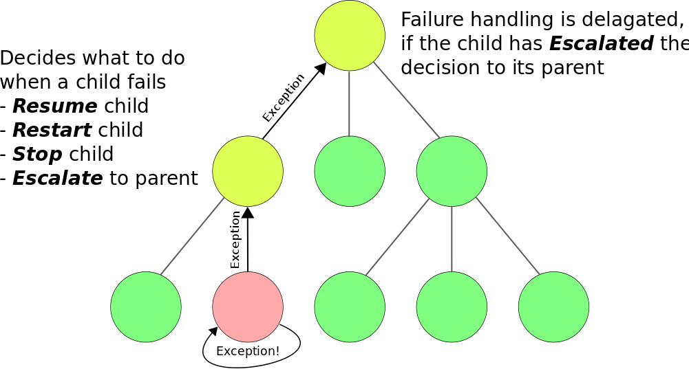
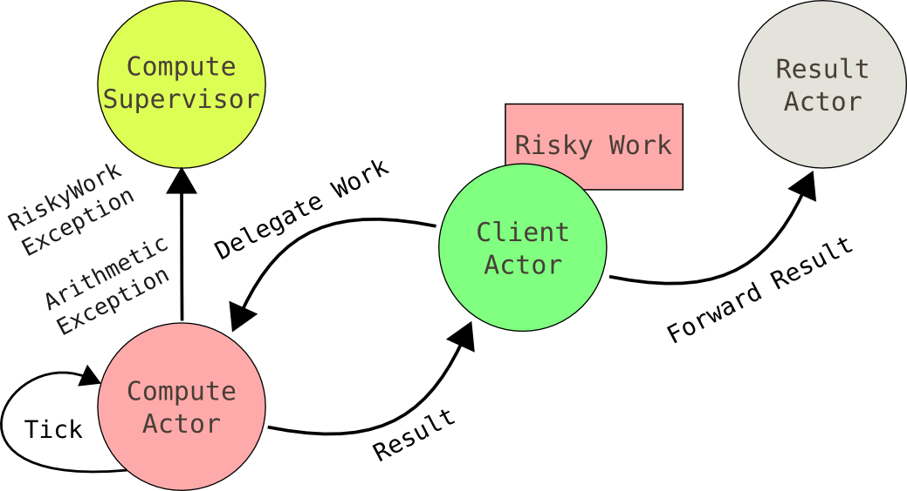

- Part 1 - Creating actors and sending messages
- Part 2 - Actor supervision and death watch
- Part 3 - Scalability
Outline
Motivation
- Concurrency is hard
- Users expect low latency
- Users expect availability
- Applications need to scale
What is Akka
- "Toolkit" for the JVM
- Extensive documentation (~350 pages)
- Concurrency & Distribution
- Resilient
- High performance
- Elastic & Decentralized
Where should you use Akka
- Transaction processing (banking, gaming, statistics)
- Service backend (SOAP, REST, WebSockets)
- Batch processing
- Concurrency/parallelism
Outline
- Part 1 - Creating actors and sending messages
- Part 2 - Actor supervision and death watch
- Part 3 - Scalability
The Actor Model
- Actors sends messages asynchronously
- Actors process messages sequentially

Hello Actor
import akka.actor._
class GreetingActor_1 extends Actor {
def receive = {
case message : String => println("Hello " + message)
}
}
object GreetingActor_1 extends App {
val system = ActorSystem("MySystem")
val actorRef = system.actorOf(Props(new GreetingActor_1))
actorRef ! "Hulk Hogan"
}
Sending Messages
import akka.actor._
case class SayHello(name: String)
class GreetingActor_2 extends Actor {
def receive = {
case hello : SayHello => {
println("Hello " + hello.name)
sender ! " a reply"
}
}
}
object GreetingActor_2 extends App {
val actorRef = ActorSystem("MySystem").actorOf(Props(new GreetingActor_2))
actorRef ! SayHello("Pope Benedict")
}
Scheduling Work
import akka.actor._
import scala.concurrent.duration._
case class DoGreeting()
class GreetingActor_3(myInterval: FiniteDuration) extends Actor {
override def preStart() = {
scheduleNextGreeting()
}
def receive = {
case DoGreeting => {
println("Hello!")
scheduleNextGreeting()
}
}
def scheduleNextGreeting() {
import context.dispatcher
context.system.scheduler.scheduleOnce(myInterval, self, DoGreeting)
}
}
Part 1 - Exercises
- Implement ComputeActor.scala
- Make tests in ComputeActorTest.scala green
Outline
- Part 1 - Creating actors and sending messages
- Part 2 - Actor supervision and death watch
- Part 3 - Scalability
Supervision through hierarchies

- Actor supervision is recursive, enabling delegation of failure handling
Creating a supervisor
import akka.actor.OneForOneStrategy
import akka.actor.SupervisorStrategy._
import scala.concurrent.duration._
class Supervisor extends Actor {
override val supervisorStrategy =
OneForOneStrategy(maxNrOfRetries = 10, withinTimeRange = 1 minute) {
case _: ArithmeticException => Resume
case _: NullPointerException => Restart
case _: IllegalArgumentException => Stop
case _: Exception => Escalate
}
def receive = {
case p: Props => sender() ! context.actorOf(p)
}
}
Using Death Watch
import akka.actor.{Props, Actor, Terminated, ActorRef, ActorSystem}
class DeathWatchActor extends Actor {
override def preStart() {
val actorRef: ActorRef = context.actorOf(Props(new VolatileGreetingActor())
context.watch(actorRef)
actorRef ! "print this message, please!"
}
def receive = {
case Terminated(_) => println("looks like an actor has died :(")
}
}
Life-cycle of Actors
class LifeCycleActor extends Actor {
def receive = {
case e: Exception => throw e
}
override def preStart() {
println("preStart() - called by FIRST actor-instance during startup")
}
override def postStop() {
println("postStop() - called by ANY actor-instance during shutdown")
}
override def preRestart(reason: Throwable, message: Option[Any]) {
println("preRestart() - called on ANY running actor about to be restarted")
}
override def postRestart(reason: Throwable) {
println("postRestart() - called on a NEW INSTANCE of this actor after restart")
}
}
What happens on an actor restart
Part 2 - Architecture

Part 2 - Exercises
-
Supervision
- Implement ComputeSupervisor.scala
- Make tests in ComputeSupervisorTest.scala green
-
Death Watch
- Implement ClientActor.scala
- Make tests in ClientActorTest.scala green
- Useful resources:
Outline
- Part 1 - Creating actors and sending messages
- Part 2 - Actor supervision and death watch
- Part 3 - Scalability
Part 3 - Exercises
- Finish implementing ClientActor.scala
- Make remaining tests in ClientActorTest.scala green
Thanks!
Questions?